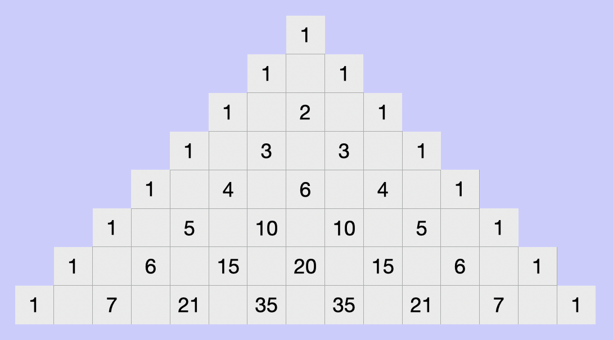

You have a group assignment on combinatorics and your colleagues need some calculations done. They asked if you could compute the first few lines of the Pascal triangle for them, just the first 30 lines.
Since it seemed like a small number, you accepted, but now that you are tackling the problem, the numbers you're getting are starting to get big. You may need a computer to calculate this.
You are given a number n. Print the n-th line of the Pascal triangle.
You will receive one line, with the number n (1 <= n <= 30).
Print the nth line of Pascal Triangle. It will be composed of n integer values.
Input
1
Output
1
Input
2
Output
1 1
Input
3
Output
1 2 1